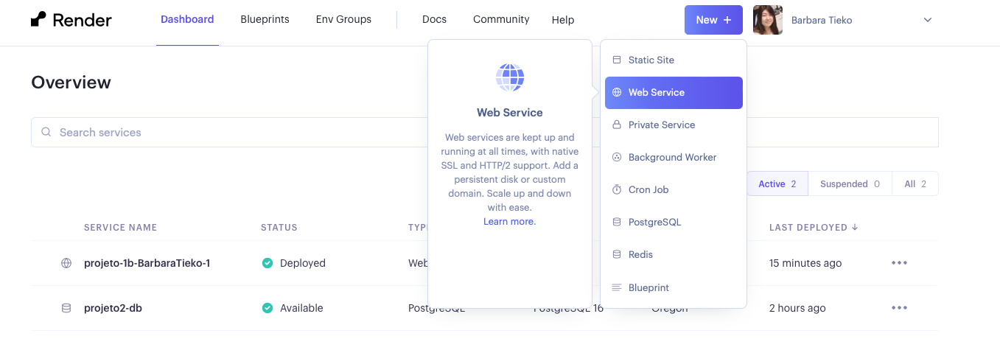
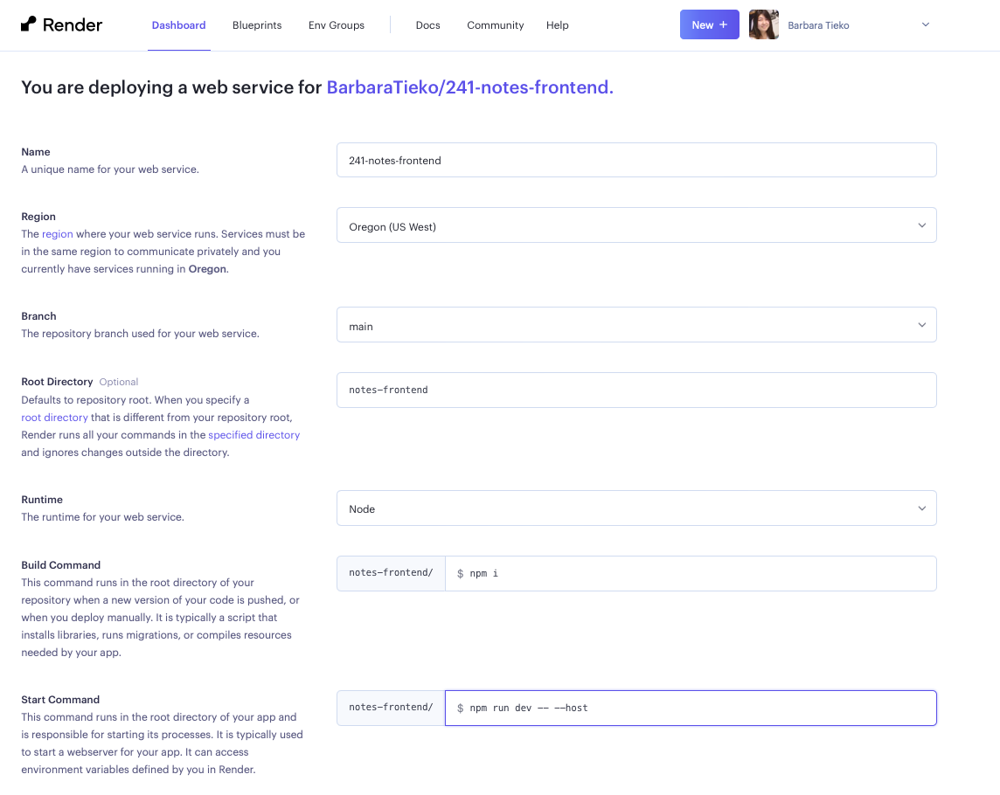

Deploy
Para realizar o deploy para o projeto 2 precisaremos efetuar duas etapas: o deploy do frontend e o deploy do backend.
Deploy do backend
Assim como no projeto 1B, vamos realizar o deploy do backend utilizando o serviço Render. Caso você não tenha realizado o deploy do projeto 1B, siga o tutorial em Deploy do Projeto 1B.
Caso tenha realizado o deploy do projeto 1B, apague as instâncias do banco de dados e o projeto 1B do Render para que possa criar novas instâncias para o projeto 2.
Resumo do deploy
Criando PostgreSQL no Render
O primeiro passo é criar um banco de dados PostgreSQL utilizando o Render.
Visite o site https://render.com/ e preenche o campo name com um nome para o banco de dados. Os outros campos são opcionais.

Escolha a opção gratuita. Não é necessário adicionar nenhuma informação de pagamento.
Em seguida, clique em Create Database.

Será necessário esperar um pouco até que o banco de dados seja criado.

Quando o status estiver como Available, desça a página e procure a área chamada Connections. Dentro dessa área, procure o campo External Database URL, essa informação será utilizada para conectar o banco de dados com a aplicação.
Clique no botão Copy e guarde essa informação, pois vamos precisar dela mais tarde.

Guarde o valor contido no campo External Database URL, pois vamos utilizá-lo mais tarde.
Conectando a aplicação com o banco de dados PostgreSQL
-
Abra o seu projeto 2 Django REST.
-
Instale a dependência
dj-database-url: -
Adicione o
importno começo do arquivosettings.py(Pode ser logo após o códigofrom pathlib import Path):
- ainda no arquivo
settings.py, procure pelo dicionárioDATABASESe substitua pelo código abaixo:
DATABASES = {
'default': dj_database_url.config(
default='',
conn_max_age=600,
ssl_require=not DEBUG
)
}
No campo default adicione a informação aquela informação que havíamos copiado anteriormente. (O campo External DATABASE URL)
Mais configurações do projeto
- Instale a dependência
gunicorn:
Outras modificações nas configurações
Aproveite que está com o settings.py aberto e modifique o valor da constante DEBUG para False. Além disso, procure pela lista ALLOWED_HOSTS, ela deve ser uma lista vazia, ou seja, ALLOWED_HOSTS = [] altere para:
-
Debug para
False: -
Allowed Hosts para
['*']:python ALLOWED_HOSTS = ['*']
Atualizando o arquivo requirements.txt
Vamos criar o arquivo requirements.txt com as dependências do projeto. Para isso, rode o comando:
Dê uma olhada no arquivo requirements.txt e verifique se não há dependências desnecessárias.
Faça um commit e um push para o seu repositório no Github.
Arquivos desnecessários
O seu repositório deve possui um arquivo .gitignore com o seguinte conteúdo:
Conteúdo do arquivo .gitignore do projeto Django
# Byte-compiled / optimized / DLL files
__pycache__/
*.py[cod]
*$py.class
# C extensions
*.so
# Distribution / packaging
.Python
build/
develop-eggs/
dist/
downloads/
eggs/
.eggs/
lib/
lib64/
parts/
sdist/
var/
wheels/
pip-wheel-metadata/
share/python-wheels/
*.egg-info/
.installed.cfg
*.egg
MANIFEST
# PyInstaller
# Usually these files are written by a python script from a template
# before PyInstaller builds the exe, so as to inject date/other infos into it.
*.manifest
*.spec
# Installer logs
pip-log.txt
pip-delete-this-directory.txt
# Unit test / coverage reports
htmlcov/
.tox/
.nox/
.coverage
.coverage.*
.cache
nosetests.xml
coverage.xml
*.cover
*.py,cover
.hypothesis/
.pytest_cache/
# Translations
*.mo
*.pot
# Django stuff:
*.log
local_settings.py
db.sqlite3
db.sqlite3-journal
# Flask stuff:
instance/
.webassets-cache
# Scrapy stuff:
.scrapy
# Sphinx documentation
docs/_build/
# PyBuilder
target/
# Jupyter Notebook
.ipynb_checkpoints
# IPython
profile_default/
ipython_config.py
# pyenv
.python-version
# pipenv
# According to pypa/pipenv#598, it is recommended to include Pipfile.lock in version control.
# However, in case of collaboration, if having platform-specific dependencies or dependencies
# having no cross-platform support, pipenv may install dependencies that don't work, or not
# install all needed dependencies.
#Pipfile.lock
# PEP 582; used by e.g. github.com/David-OConnor/pyflow
__pypackages__/
# Celery stuff
celerybeat-schedule
celerybeat.pid
# SageMath parsed files
*.sage.py
# Environments
.env
.venv
env/
venv/
ENV/
env.bak/
venv.bak/
# Spyder project settings
.spyderproject
.spyproject
# Rope project settings
.ropeproject
# mkdocs documentation
/site
# mypy
.mypy_cache/
.dmypy.json
dmypy.json
# Pyre type checker
.pyre/
.DS_Store
Importante
Certifique-se de o arquivo db.sqlite3 foi comitado, assim como as pastas "pycache" e "env".]
Caso tenha comitado o arquivo db.sqlite3, execute o comando a seguir e faça um commit e um push:
Caso tenha comitado a pasta env, execute o comando a seguir e faça um commit e um push:
Enviando o projeto para o Render
-
Acesse a página do Render e clique em
New +e em seguidaWeb Service.

-
Escolha a opção de fazer o deploy a partir de um repositório do Github.

-
Procure o repositório que você fez o fork do projeto e clique em
Connect.
-
Procure a opção
Start Commande troque o comando existente pelo seguinte comando: TroqueXXXXXXXpelo nome do seu projeto. O nome do seu projeto é o nome da pasta que contém o arquivosettings.py. -
Selecione a opção gratuita e clique em
Create Web Service.
-
Caso tenha utilizado o arquivo
.envserá necessário adicionar as variáveis de ambiente no Render. Para isso, adicione o nome e o valor de todas as variáveis de ambiente presentes no arquivo.envno Render. -
O Render vai iniciar o processo de deploy. Aguarde até que o deploy seja finalizado. É possível acompanhar o processo do deploy no terminal do Render.

-
Caso o deploy tenha sido realizado com sucesso, você verá a seguinte mensagem:

É possível acessar a aplicação clicando no link que aparece no topo da página.
{kind=link}
Passo final
Após realizar a etapa acima com sucesso, realize as últimas configurações.
Vá no arquivo settings.py e atualize a variável ALLOWED_HOSTS (A configuração da variável ALLOWED_HOSTS serve para evitar alguns ataques):
ALLOWED_HOSTS não deve utilizar o https://
Substitua tecweb-projeto-exemplo.onrender.com pelo link da sua aplicação gerado pelo Render.
Faça um novo commit e realize um push para o seu repositório no Github.
Sempre que você realizar um commit na branch principal, o Render fará um novo deploy.


Deploy do frontend
.gitignore
Crie um arquivo .gitignore na pasta do seu projeto frontend com o seguinte conteúdo:
Importante
Certifique-se de que a pasta node_modules não foi comitada. Caso tenha comitado a pasta node_modules, execute o comando a seguir e faça um commit e um push:
Alterando localhost
Após realizar o deploy do backend, vamos realizar o deploy do frontend. Para isso, pegue o link gerado para o seu projeto backend no Render e atualize todas as requisições feitas no frontend para a rota http://localhost:8000 para o link gerado pelo Render.
Faça um commit e um push para o seu repositório no Github.
Deploy do frontend
Vamos criar outro web service no Render para o frontend.
{kind=link}

-
Escolha a opção
Build and Deploy a New Web Service. -
Procure o repositório com o projeto frontend e clique em
Connect. -
Coloque as seguintes configurações:
- Root directory: Coloque a pasta que contem o arquivo
package.json, caso este arquivo não esteja na raiz do projeto. - Build Command:
npm i - Start Command:
npm run dev -- --host
- Root directory: Coloque a pasta que contem o arquivo
{kind=link}

-
Escolha a opção gratuita e clique em
Create Web Service. -
O Render vai iniciar o processo de deploy. Aguarde até que o deploy seja finalizado. É possível acompanhar o processo do deploy no terminal do Render.
Por fim, adicione o link do deploy do frontend no arquivo README.md do seu repositório.